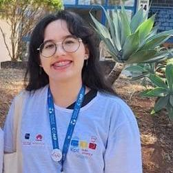

Sobre o PatronusNet
Um projeto acadêmico dedicado a criar proteção digital acessível e inteligente para todos.
Nossa Missão
Desenvolver uma solução de código aberto que empodera usuários a proteger sua rede e dispositivos contra conteúdos indesejados, com ferramentas intuitivas e acessíveis a todos.
Visão
Ser referência em proteção digital educacional, promovendo segurança online responsável e conscientização sobre o uso seguro da internet.
Objetivo
Fornecer ferramentas de filtragem, bloqueio e monitoramento que funcionem em nível de rede e extensão, permitindo controle centralizado e proteção automática.
Nossa Equipe

Izabel Chaves
Responsável pelo design de interface, pesquisa de experiência do usuário e construção das telas de controle de acesso.
Matheus Coxir
Atua no desenvolvimento do processamento de rede, filtragem de conteúdos e integração dos módulos de proteção.
Tecnologias Utilizadas
Frontend
- HTML5
- CSS3
- JavaScript (Vanilla)
Extensão
- Chrome Extension API
- WebRequest API
- Storage API
Processamento
- Filtragem de rede
- Análise de DNS
- Processamento em tempo real
Segurança
- Criptografia local
- Proteção com senha
- Histórico seguro